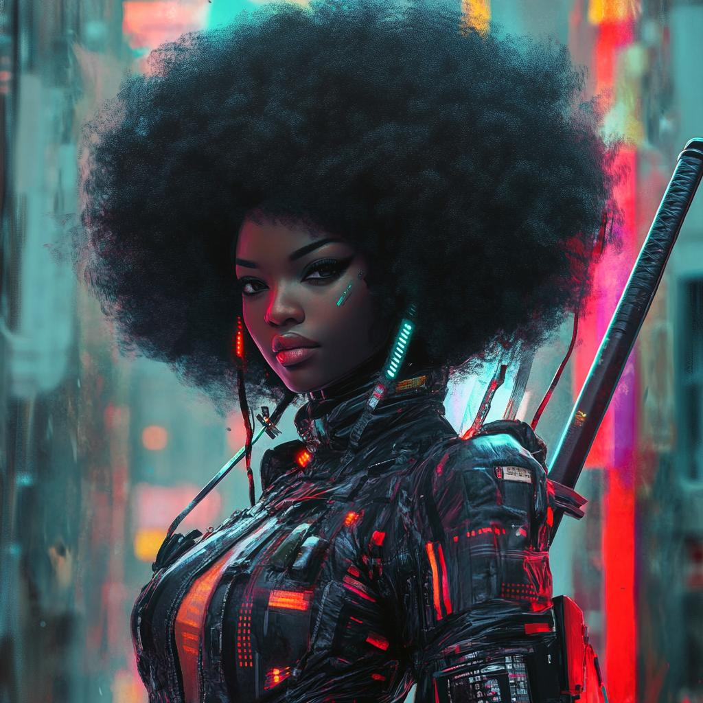
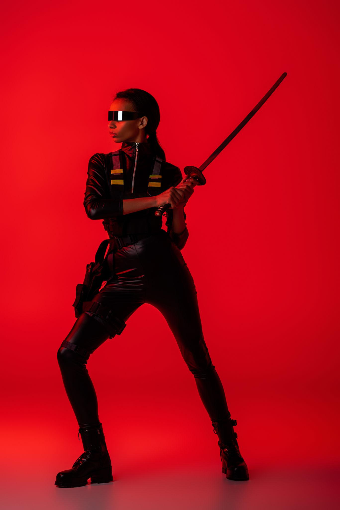
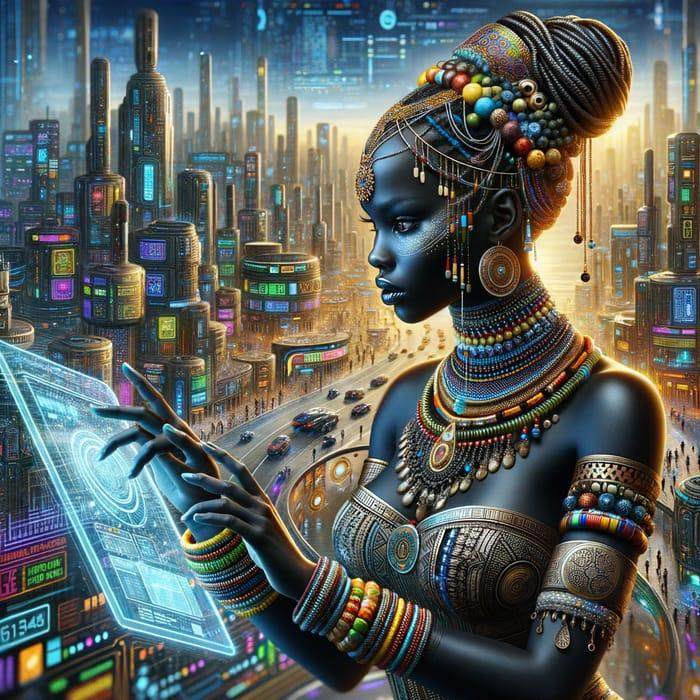

GALERIA
EXPOSIÇÕES DIGITAIS
Exibições imersivas com arte em realidade aumentada e inteligência artificial

Guerreira Neon Retrato de uma mulher futurista que mistura força, tecnologia e identidade em um cenário cyberpunk vibrante.

Samurai Urbano Figura enigmática vestida de preto em contraste com o fundo vermelho intenso, representando resistência e atitude.

Rainha Digital Uma visão futurista da conexão entre ancestralidade africana e inteligência artificial em uma metrópole tecnológica.

Máscara Tecnológica Arte que une elementos tribais e circuitos modernos, simbolizando evolução e transformação cultural.
Alma Cibernética Retrato detalhado de uma mulher conectada à tecnologia, transmitindo emoção, humanidade e futurismo ao mesmo tempo.
Humana Uma representação futurista entrelaçando a essencia humana e a tecnologia, destacando a beleza e complexidade da identidade digital